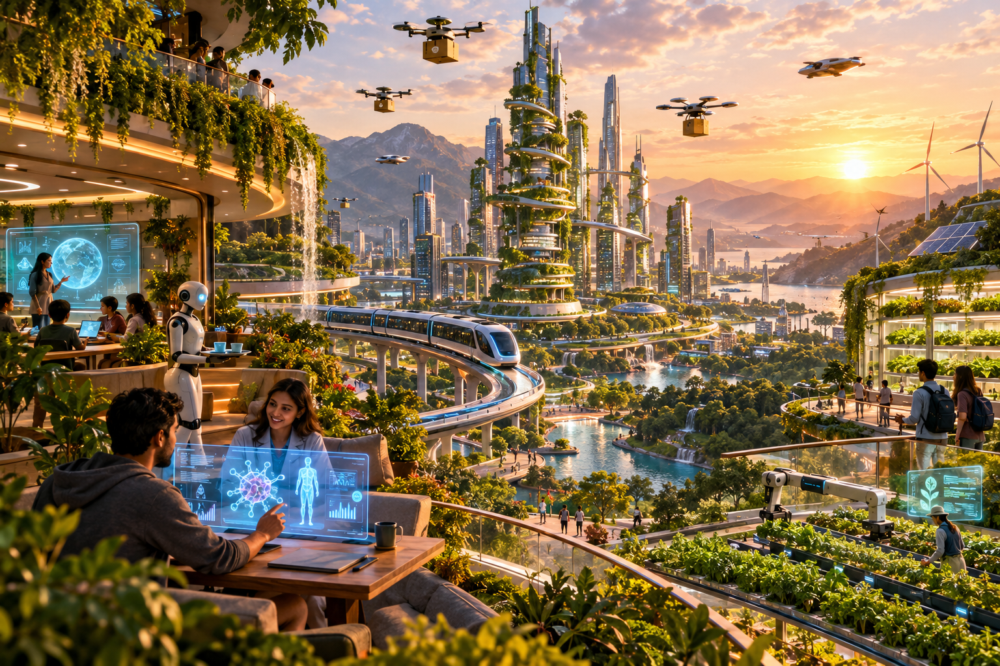

01
🌱
Greener Cities
AI can coordinate energy, water, farming and transport so cities use resources intelligently.

What if the smartest technology we build also helps us create a more human, greener and more hopeful world?
I imagine a world where artificial intelligence is not the destination, but a partner. It helps us understand complex problems, protect the planet, learn without limits and turn bold ideas into reality.
Human imagination + machine intelligence = possibilities we have never seen before.
Clean energy, intelligent transport, vertical gardens, personalized education and people working alongside AI.
AI can coordinate energy, water, farming and transport so cities use resources intelligently.
Personalized AI tutors can help more people learn at their own pace and unlock their potential.
AI handles complexity while people lead with empathy, imagination, judgment and purpose.
The best future is not one where machines replace people. It is one where technology gives people more time, knowledge and freedom to solve meaningful problems.
AI becomes a creative and educational partner in everyday life.
Healthcare, transport, agriculture and infrastructure become more adaptive.
Human and machine intelligence work together on challenges that once seemed impossible.
“A photorealistic cinematic panorama of a sustainable futuristic metropolis where humans and AI-powered robots collaborate, with vertical gardens, terraced farms, clean waterways, autonomous electric transit, drones, organic skyscrapers, wind turbines and solar roofs, surrounded by mountains at golden hour; show AI supporting education, healthcare and creativity while keeping nature and people at the center.”
“The future isn't something we wait for.
It's something we build.”